CRVI000140Jutaro Itoh - 企業空間のサイン — Corporate Signs (Designing Signs Vol. 2)
Jutaro Itoh and Atsuko Taguchi · Rikuyo-sha
Jutaro Itoh and Atsuko Taguchi · Rikuyo-sha
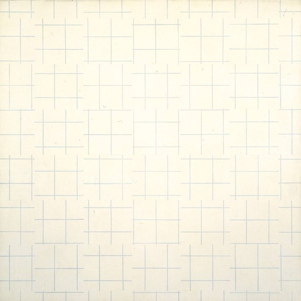
CRVI001843François Morellet - Two Warps and Wefts of Short Lines 0°–90°
1956
1956

CRVI000556Gail Bichler - The Future of Work When No One Wants to Work
The New York Times Magazine, February 20, 2022 · 2022
The New York Times Magazine, February 20, 2022 · 2022

CRVI000247Marisol - Untitled
Exhibition Poster · 1960-65 · 1960-65
Exhibition Poster · 1960-65 · 1960-65

CRVI001037 - Drawing on music staves
Cooper Hewitt, Smithsonian Design Museum, 1981-29-424
Cooper Hewitt, Smithsonian Design Museum, 1981-29-424
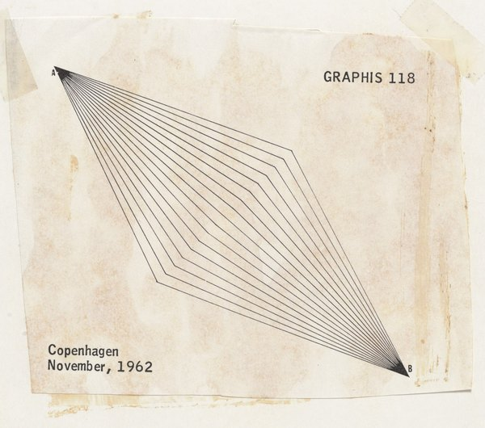
CRVI001861Unidentified - Graphis 118
1962
1962

CRVI000796Hannah Wilke - Untitled
Coloured pencil, pencil and graphite on paper · 45.7 × 61 cm · 1969
Coloured pencil, pencil and graphite on paper · 45.7 × 61 cm · 1969
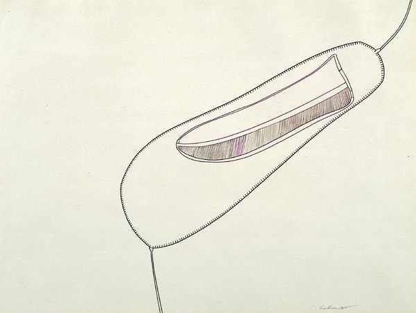
CRVI002118Eva Hesse - Untitled
1965
1965

CRVI001384Whitney Museum of American Art - Annual Exhibition 1966: Contemporary Sculpture and Prints
Designer unrecorded · Exhibition catalogue · Dec 16, 1966 – Feb 5, 1967 · 1966
Designer unrecorded · Exhibition catalogue · Dec 16, 1966 – Feb 5, 1967 · 1966

CRVI000428The Chills - Brave Words
Designer unknown · Flying Nun Records · 1987
Designer unknown · Flying Nun Records · 1987

CRVI000451Derek Birdsall - Creativity
Cover for P. E. Vernon · Penguin Education · 1972
Cover for P. E. Vernon · Penguin Education · 1972

CRVI000780Paul Rand - Jacqueline Cochran leg makeup
Advertisement
Advertisement

CRVI000452Derek Birdsall - Reconstructing Social Psychology
Cover for Nigel Armistead · Penguin Education · 1972
Cover for Nigel Armistead · Penguin Education · 1972

CRVI000448Derek Birdsall - Socialization
Cover for Kurt Danziger · Penguin Education · 1972
Cover for Kurt Danziger · Penguin Education · 1972

CRVI000797Hannah Wilke - Untitled
Coloured pencil and pencil on paper · 45.7 × 61 cm · 1967
Coloured pencil and pencil on paper · 45.7 × 61 cm · 1967

CRVI000011Cluster - Curiosum
Artwork by Dieter Moebius · Sky Records · 1981
Artwork by Dieter Moebius · Sky Records · 1981

CRVI001291Phil Woods, Gene Quill, Sahib Shihab, Hal Stein - Four Altos
Designed by Reid Miles · Prestige 7116 · 1958
Designed by Reid Miles · Prestige 7116 · 1958

CRVI000733Robert Beatty - Untitled
Album cover · artist and title unrecorded · Trendland plate 02
Album cover · artist and title unrecorded · Trendland plate 02

CRVI000053Pierre Schaeffer - Le Trièdre Fertile
Designed by Stephen O'Malley · Philips · 1978
Designed by Stephen O'Malley · Philips · 1978

CRVI000095Martin Davorin Jagodic - Tempo Furioso (Tolles Wetter)
Designer unknown · nova musicha - n. · 1975
Designer unknown · nova musicha - n. · 1975

CRVI000449Derek Birdsall - Peasants and Peasant Societies
Cover for Teodor Shanin · Penguin Education · 1972
Cover for Teodor Shanin · Penguin Education · 1972
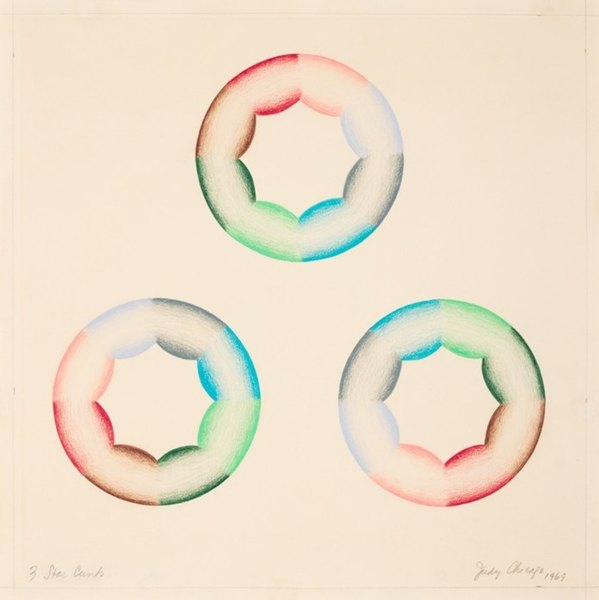
CRVI002131Judy Chicago - 3 Star Cunts
1969
1969
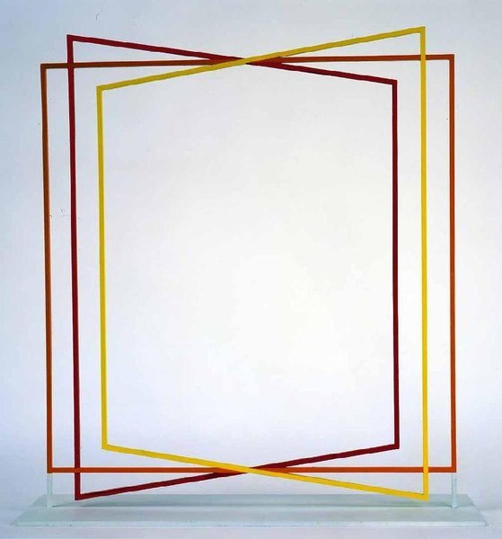
CRVI001834Richard Anuszkiewicz - Spring Mix
2000
2000

CRVI000447Derek Birdsall - Ideology
Cover for L. B. Brown · Penguin Education · 1972
Cover for L. B. Brown · Penguin Education · 1972

CRVI000109Katsumi Asaba - Bauhaus.
Misawa Design, bauhaus collection · after Lyonel Feininger's woodcut 'Cathedral', 1919 · 2009
Misawa Design, bauhaus collection · after Lyonel Feininger's woodcut 'Cathedral', 1919 · 2009

CRVI000841Ottagono - Ottagono 18
settembre 1970 · anno 5 · 1970
settembre 1970 · anno 5 · 1970

CRVI000453Derek Birdsall - Culture Against Man
Cover for Jules Henry · Penguin Education · 1972
Cover for Jules Henry · Penguin Education · 1972
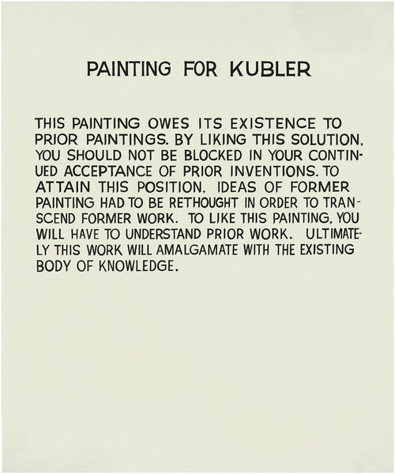
CRVI001908John Baldessari - Painting for Kubler
1968
1968

CRVI000793Roy Kuhlman - Yoo-Yoo
Journal of the American Medical Association · 1954
Journal of the American Medical Association · 1954
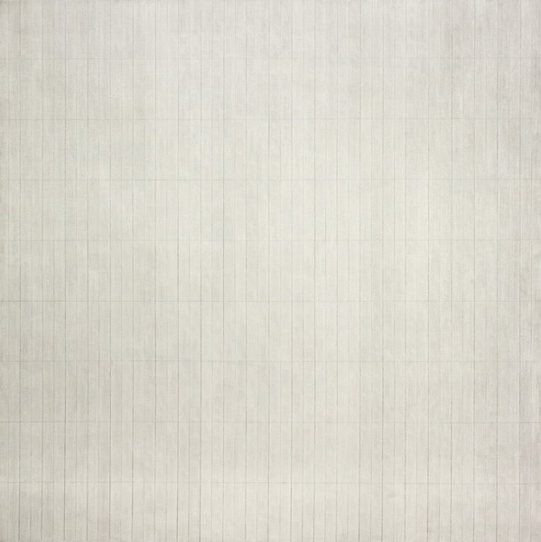
CRVI001875Agnes Martin - Untitled #12
1977
1977
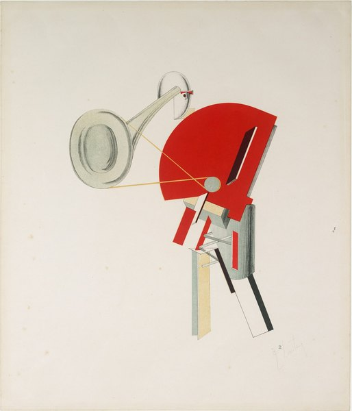
CRVI001496El Lissitzky - Announcer
1923
1923
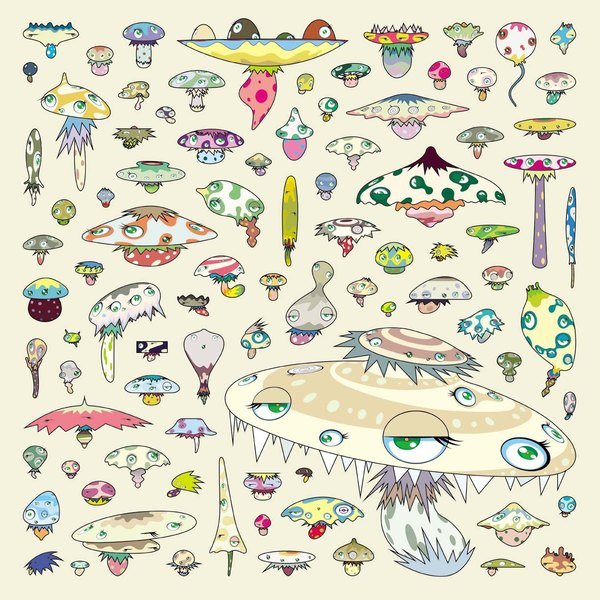
CRVI001956Takashi Murakami - Army of Mushrooms
2003
2003

CRVI000285Unknown - Heinz Tomato Juice — We're Sorry There Aren't Enough of our kind to go 'round
Advertisement · Fortune magazine · 1935 · 1935
Advertisement · Fortune magazine · 1935 · 1935

CRVI000586Unknown - This Machine Swallows Buses While Going 60 mph
New York, February 24, 1969 · 1969
New York, February 24, 1969 · 1969
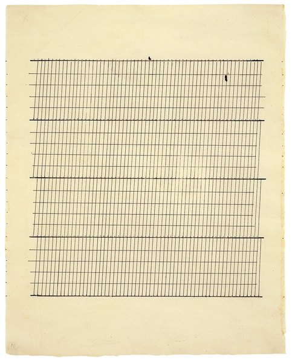
CRVI001872Agnes Martin - Aspiration
1960
1960
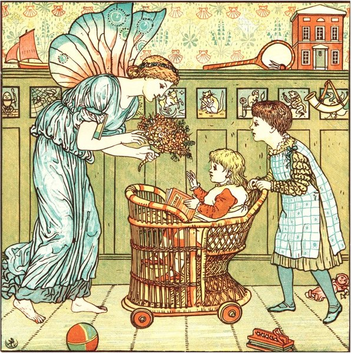
CRVI001466Unidentified - Nursery interior with a child in a wicker cradle-cart

CRVI001618Pierre Bonnard - Family Scene
1893
1893

CRVI000794Roy Kuhlman - The Ticket That Exploded
Grove Press · William S. Burroughs
Grove Press · William S. Burroughs

CRVI000591Unknown - Doctor Feelgood, You Make Me Feel So Good. Are You Sure It's All Right?
New York, February 8, 1971 · 1971
New York, February 8, 1971 · 1971
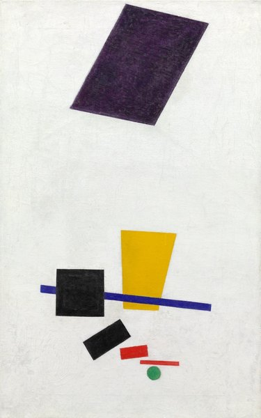
CRVI001511Kazimir Malevich - Painterly Realism of a Football Player — Color Masses in the 4th Dimension
Summer/fall 1915
Summer/fall 1915
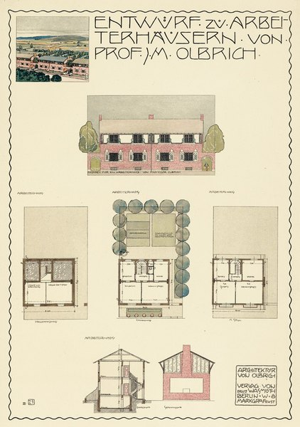
CRVI001444Joseph Maria Olbrich - Entwürfe zu Arbeiterhäusern
Plate from Architektur von Olbrich
Plate from Architektur von Olbrich

CRVI001381Benny Golson - Benny Golson and the Philadelphians
Designer unrecorded · United Artists 4020 · 1959
Designer unrecorded · United Artists 4020 · 1959

CRVI000599Unknown - 1977: It All Happened Here. Where Else?
New York, December 26, 1977 · 1977
New York, December 26, 1977 · 1977

CRVI001385Whitney Museum of American Art - 1964 Annual Exhibition of Contemporary American Sculpture
Designer unrecorded · Exhibition catalogue · Dec 9, 1964 – Jan 31, 1965 · 1964
Designer unrecorded · Exhibition catalogue · Dec 9, 1964 – Jan 31, 1965 · 1964

CRVI000777Chermayeff & Geismar Associates - Print, September/October 1962
Print XVI:V · 1962
Print XVI:V · 1962

CRVI001283The Modern Jazz Quartet - Concorde
Designed by Reid Miles · Prestige 7005 · 1955
Designed by Reid Miles · Prestige 7005 · 1955
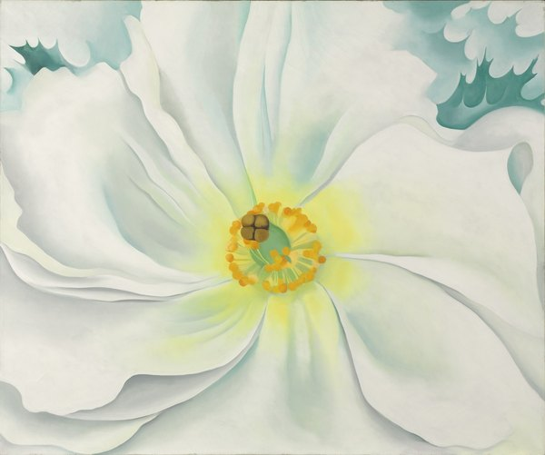
CRVI001578Georgia O'Keeffe - White Flower
1929
1929

CRVI000327The Marvelettes - Please Mr. Postman
Designer unknown · Tamla · 1961
Designer unknown · Tamla · 1961

CRVI000073Event Cloak - Life Strategies
Designer unknown · 2017
Designer unknown · 2017

CRVI001442Joseph Maria Olbrich - Secession: Kunstausstellung der Vereinigung Bildender Künstler Oesterreichs
Poster · 1898
Poster · 1898

CRVI001482Francis Picabia - Dadaphone no. 7
Cover · 1920
Cover · 1920
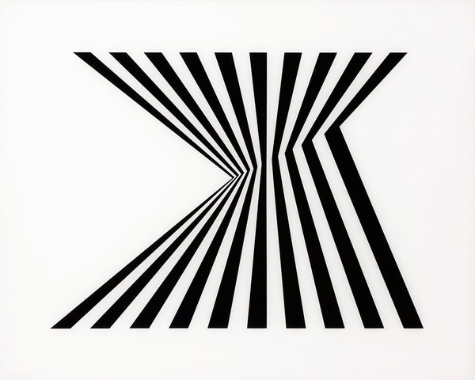
CRVI001821Bridget Riley - Chevron composition
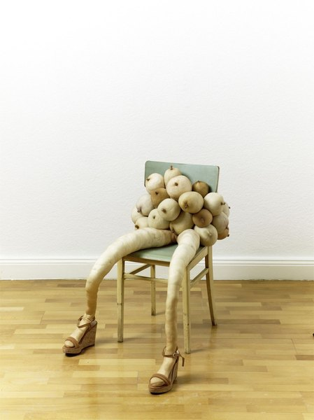
CRVI001935Unidentified - Stuffed forms on a chair
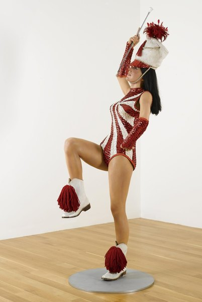
CRVI001406Duane Hanson - Baton Twirler
Duane Hanson · 1971 · 1971
Duane Hanson · 1971 · 1971

CRVI000382Joel Vandroogenbroeck - Images Of Flute In Nature
Designer unknown · Cenacolo · 1978
Designer unknown · Cenacolo · 1978

CRVI000170Kestrel - Kestrel
Designer unknown
Designer unknown
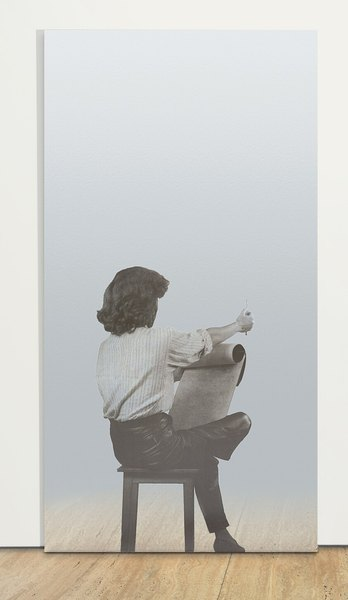
CRVI001884Michelangelo Pistoletto - Girl Drawing
1979
1979
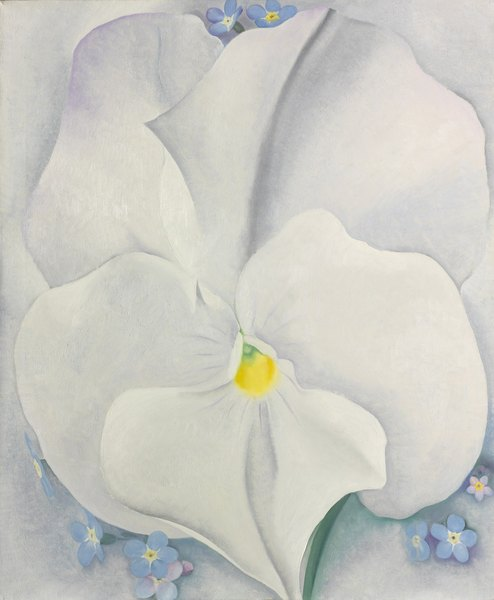
CRVI001579Georgia O'Keeffe - White Pansy
1927
1927
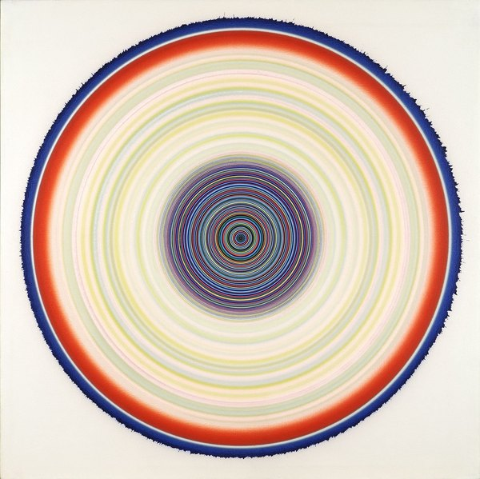
CRVI001847Tadasky - G-101

CRVI001359Eva Hesse - Untitled
Pen and black ink on printed, ivory wove graph paper · 27.8 × 21.5 cm · 1967
Pen and black ink on printed, ivory wove graph paper · 27.8 × 21.5 cm · 1967
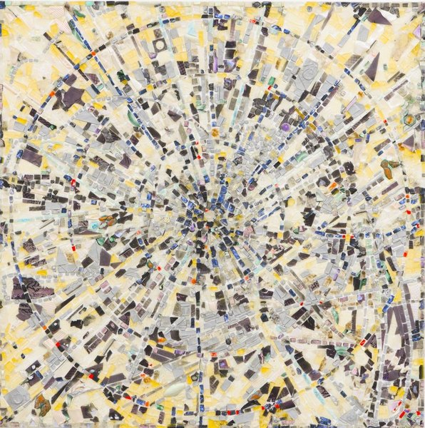
CRVI002125Jack Whitten - Untitled
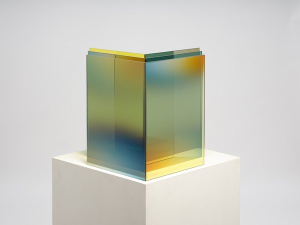
CRVI001881Larry Bell - Untitled 2 x 3
2021
2021

CRVI000227Beats International - Let Them Eat Bingo
Designer unknown · Go! Beat · 1990
Designer unknown · Go! Beat · 1990

CRVI000049Jon Appleton - The World Music Theatre Of Jon Appleton
Designed by Ronald Clyne · 1974
Designed by Ronald Clyne · 1974

CRVI000520Matt Withers - Goldman Sags
The Economist, January 28-February 3, 2023 · 2023
The Economist, January 28-February 3, 2023 · 2023

CRVI000792Roy Kuhlman - Californians Are Crazy
Esquire article opener · 1953
Esquire article opener · 1953

CRVI001387Whitney Museum of American Art - Annual Exhibition 1960: Contemporary Sculpture and Drawings
Designer unrecorded · Exhibition catalogue · Dec 7, 1960 – Jan 22, 1961 · 1960
Designer unrecorded · Exhibition catalogue · Dec 7, 1960 – Jan 22, 1961 · 1960

CRVI000454Peter Bentley - Brideshead Revisited
Cover for Evelyn Waugh · Penguin
Cover for Evelyn Waugh · Penguin
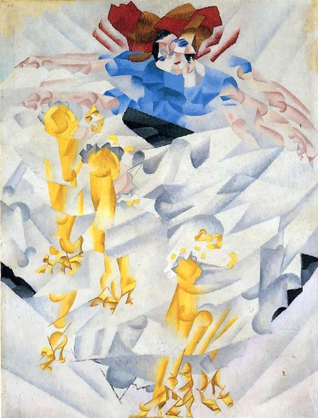
CRVI001685Gino Severini - Dynamism of a Dancer
1912
1912

CRVI000122Shigeo Fukuda - [Poster: figure walking through a red spiral, LOOK series]
Title not established
Title not established

CRVI000282Unknown - Caron's Face Powder
Poster
Poster
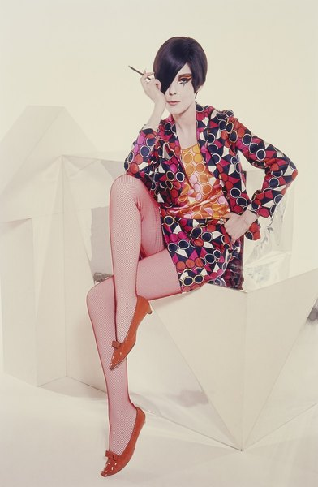
CRVI001417William Claxton - Peggy Moffitt in Rudi Gernreich's “little boy” suit

CRVI000437Unknown - Marx in His Own Words
Cover for Ernst Fischer · Pelican
Cover for Ernst Fischer · Pelican
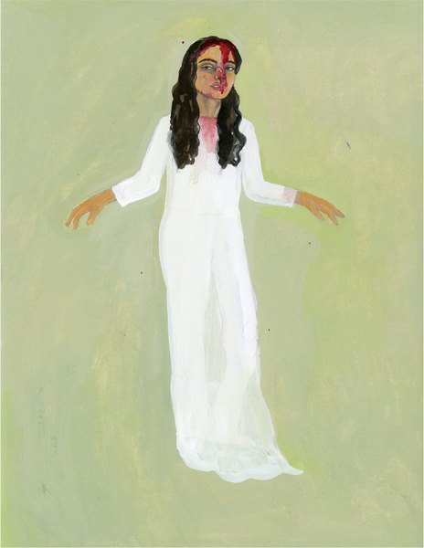
CRVI001920Unidentified - Woman in white on a green ground

CRVI000440Unknown - After Hitler
Cover for Jürgen Neven-du Mont · Pelican
Cover for Jürgen Neven-du Mont · Pelican

CRVI000628Barry Blitt - Eustace Vladimirovich Tilley
The New Yorker, March 6, 2017 · 2017
The New Yorker, March 6, 2017 · 2017

CRVI000803Joseph Beuys - Capri-Batterie
Kunstmuseum Bonn · photograph by Reni Hansen · 1985
Kunstmuseum Bonn · photograph by Reni Hansen · 1985

CRVI000581Alvin Lustig - Twenty-Third Commencement
Beverly Hills High School · 1940
Beverly Hills High School · 1940
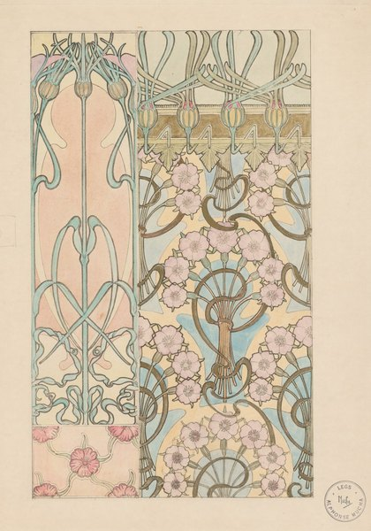
CRVI001612Alphonse Mucha - Ornament
1901–2
1901–2

CRVI001333The Damned - Music For Pleasure
Designed by Barney Bubbles · Stiff Records · 1977
Designed by Barney Bubbles · Stiff Records · 1977
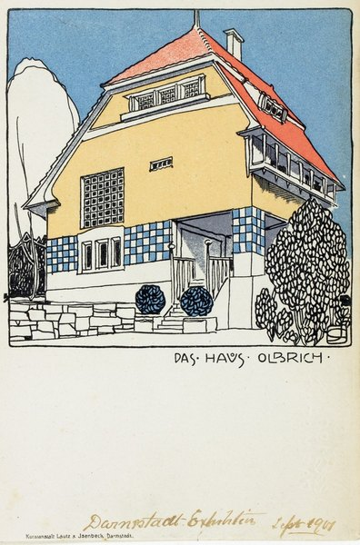
CRVI001445Joseph Maria Olbrich - Das Haus Olbrich, Darmstadt
Postcard · Darmstadt artists' colony · 1901
Postcard · Darmstadt artists' colony · 1901

CRVI001177Wayne Shorter - Et Cetera
Designed by Bill Burks, photograph by Don Peterson · Blue Note LT-1056 · 1980
Designed by Bill Burks, photograph by Don Peterson · Blue Note LT-1056 · 1980

CRVI000343Walter Jackson - It's All Over
Designer unknown · Okeh · 1965
Designer unknown · Okeh · 1965

CRVI001386Whitney Museum of American Art - Annual Exhibition 1962: Contemporary Sculpture and Drawings
Designer unrecorded · Exhibition catalogue · Dec 12, 1962 – Feb 3, 1963 · 1962
Designer unrecorded · Exhibition catalogue · Dec 12, 1962 – Feb 3, 1963 · 1962

CRVI001138Herbie Hancock - Takin' Off
Designed by Reid Miles · Blue Note BLP 4109 · 1962
Designed by Reid Miles · Blue Note BLP 4109 · 1962

CRVI000864Julian Stanczak - Airy
1973 · 1973
1973 · 1973

CRVI000439Unknown - Sanity, Madness and the Family
Cover for R. D. Laing and A. Esterson · Pelican
Cover for R. D. Laing and A. Esterson · Pelican

CRVI000359The Staple Singers - Let's Do It Again (Original Soundtrack)
Designer unknown · Curtom · 1975
Designer unknown · Curtom · 1975
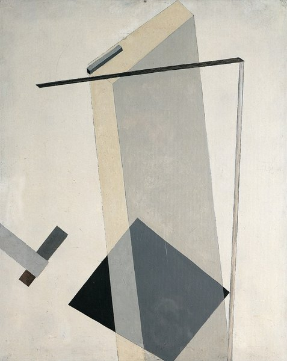
CRVI001512El Lissitzky - Proun 30
1920
1920

CRVI000088Matmos - Supreme Balloon
Designer unknown · Matador · 2008
Designer unknown · Matador · 2008
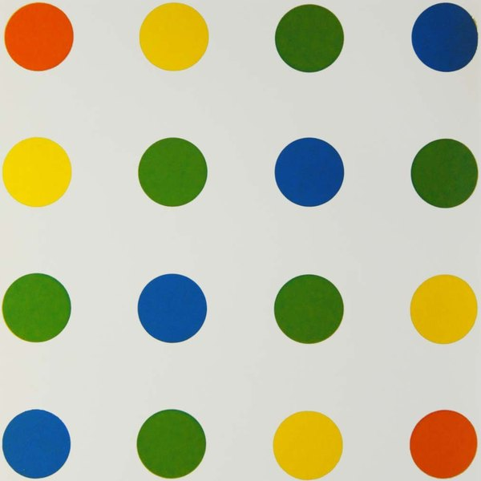
CRVI001842François Morellet - Bleu, vert, jaune, orange
1954
1954

CRVI000876John Provencher - Tracing Nature’s DNA
Bloomberg Businessweek, October 2023 · pages 48–49 · 2023
Bloomberg Businessweek, October 2023 · pages 48–49 · 2023
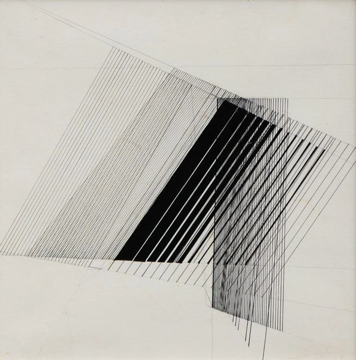
CRVI002171Nasreen Mohamedi - Untitled

CRVI000558Ricardo Rey - The Fed That Failed
The Economist, April 23-29, 2022 · 2022
The Economist, April 23-29, 2022 · 2022
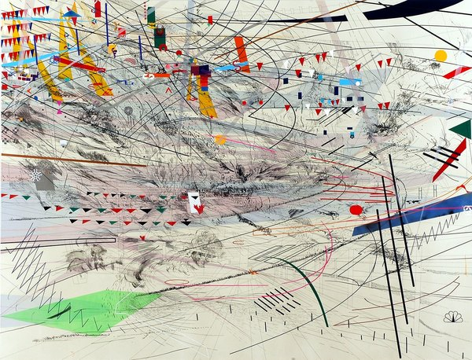
CRVI001960Julie Mehretu - Stadia III
2004
2004

CRVI001351Barney Bubbles - Get Happy!! — promotional poster
Designed by Barney Bubbles · 1980
Designed by Barney Bubbles · 1980

CRVI000370The Neville Brothers - Neville - Ization
Designer unknown · Black Top · 1984
Designer unknown · Black Top · 1984

CRVI000657David Parkins - The Surprising Sophistication of Twitter
Bloomberg Businessweek, November 11–17 2013 · 2013
Bloomberg Businessweek, November 11–17 2013 · 2013
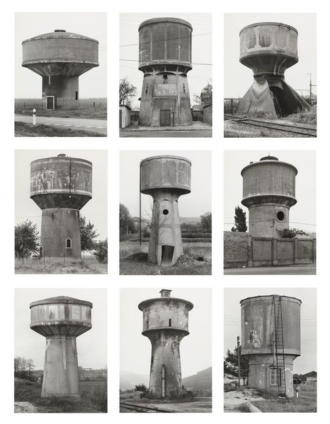
CRVI002111Bernd and Hilla Becher - Water Towers
1988
1988
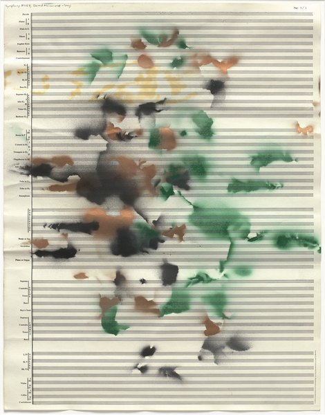
CRVI001860Unidentified - Score with painted blots

CRVI000588Unknown - The Men of Women's Liberation Have Learned Not to Laugh
New York, May 18, 1970 · 1970
New York, May 18, 1970 · 1970

CRVI001652Juan Gris - Three Lamps
1911
1911

CRVI000541Agnethe Glatved - Current Mood: Resilient
Parents, March 2021 · 2021
Parents, March 2021 · 2021

CRVI001293The Red Garland Quintet - All Mornin' Long
Designed by Esmond Edwards · Prestige 7130 · 1958
Designed by Esmond Edwards · Prestige 7130 · 1958
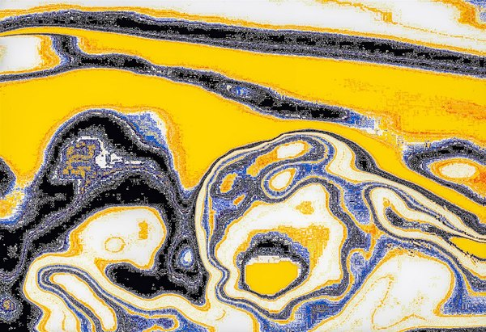
CRVI002037Tauba Auerbach - Installation view, STANDARD (OSLO)
2020
2020
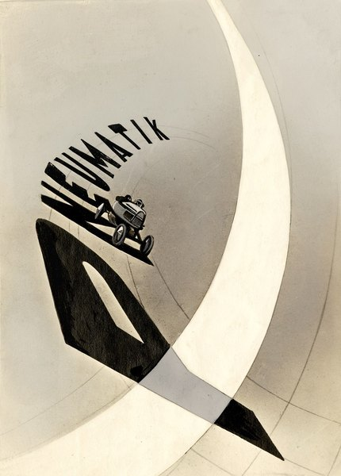
CRVI001756László Moholy-Nagy - Pneumatik
1924
1924

CRVI001036Adrian Ghenie - Untitled painting
Christie's
Christie's
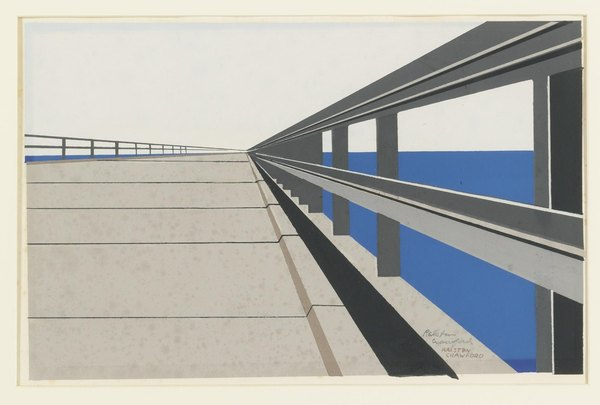
CRVI001583Ralston Crawford - Overseas Highway

CRVI000242Shazz - Shazz
Designer unknown · Columbia · 1998
Designer unknown · Columbia · 1998

CRVI000376AMM - AMMMusic
Designed by Keith Rowe · Elektra · 1967
Designed by Keith Rowe · Elektra · 1967

CRVI000288Utagawa Hiroshige - Eight Shadow Figures Art Print
Poster
Poster
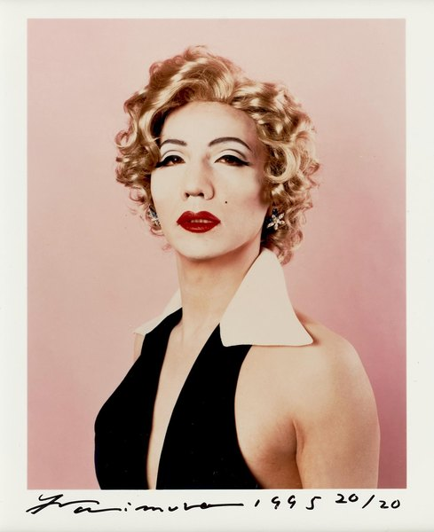
CRVI002177Yasumasa Morimura - Self-portrait as Marilyn
1995
1995

CRVI001416Paul Bacon, Ken Braren and Harris Lewine - The Unique Thelonious Monk
Album cover · Riverside RLP 12-209 · 1958
Album cover · Riverside RLP 12-209 · 1958

CRVI000635Barry Blitt - Anything But That
The New Yorker, November 14 2016 · 2016
The New Yorker, November 14 2016 · 2016
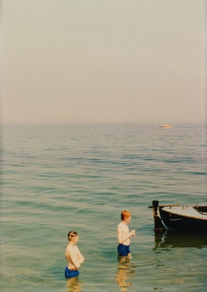
CRVI001419Unidentified - Two boys in the sea beside a boat
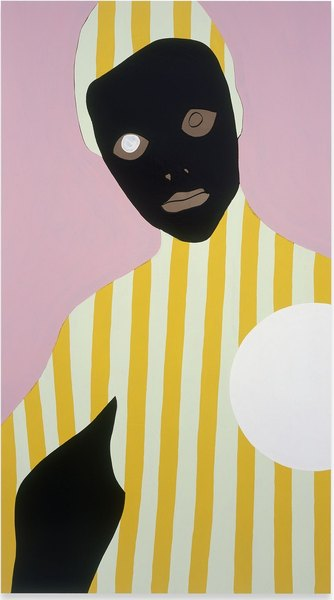
CRVI001939Gary Hume - One Eyed Person

CRVI001814Peter Blake - The Beach Boys
1964
1964

CRVI000248Tetsuya Ishida - Mebae
Exhibition Poster · 1998 · 1998
Exhibition Poster · 1998 · 1998
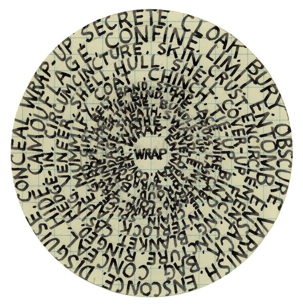
CRVI001907Mel Bochner - Portrait of Eva Hesse
1966
1966

CRVI001270Grachan Moncur III - Some Other Stuff
Designed by Reid Miles · Blue Note 4177 · 1965
Designed by Reid Miles · Blue Note 4177 · 1965
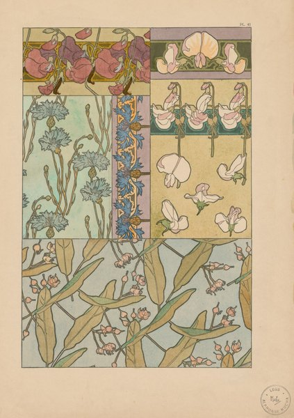
CRVI001610Alphonse Mucha - Documents Décoratifs: Sweet Peas
1901–2
1901–2

CRVI001657Juan Gris - Guitar and Glass
1912
1912

CRVI000106Natori Shunsen - Matsumoto Koshiro as the white bearded Ikkyu
from the supplement to the Collection of Shunsen portraits (Shunsen nigao-e shu) series · color woodblock · 1929
from the supplement to the Collection of Shunsen portraits (Shunsen nigao-e shu) series · color woodblock · 1929
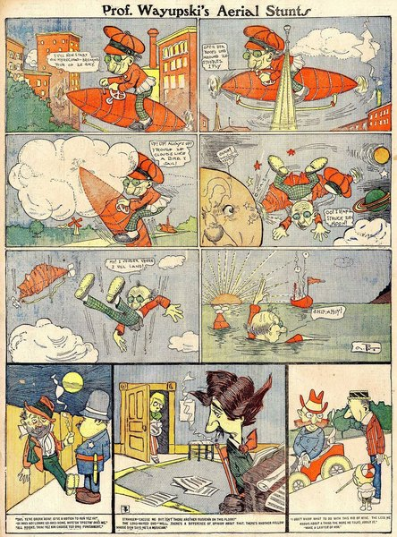
CRVI001717Albert Bloch - Prof. Wayupski's Aerial Stunts
Comic strip
Comic strip

CRVI000061Tom Cameron - Music To Wash Dishes By
Artwork by Tom Cameron · Bathing Records, Inc. · 1982
Artwork by Tom Cameron · Bathing Records, Inc. · 1982

CRVI001260John Coltrane - Coltrane's Sound
Designed by Marvin Israel · Atlantic 1419 · 1964
Designed by Marvin Israel · Atlantic 1419 · 1964

CRVI000375Alan Aldridge - Hare Sitting Up
Cover for Michael Innes · Penguin Crime
Cover for Michael Innes · Penguin Crime
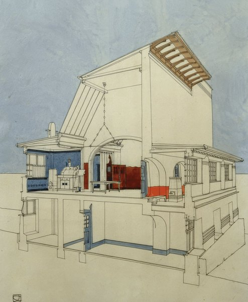
CRVI001447Unidentified - Architectural rendering of a Secession-style building

CRVI000589Unknown - Subway Roulette: The Game Is Getting Dangerous
New York, June 15, 1970 · 1970
New York, June 15, 1970 · 1970
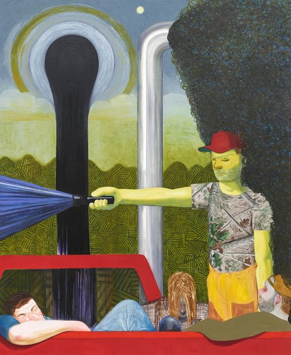
CRVI002033Nicole Eisenman - Dark Light
2017
2017
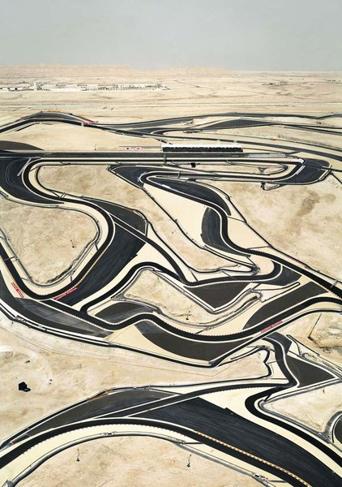
CRVI002088Andreas Gursky - Bahrain I

CRVI000169Chet Baker - Chet Baker & Crew
Designer unknown · Pacific Jazz 1224 · 1956
Designer unknown · Pacific Jazz 1224 · 1956

CRVI000494Armando Veve - Sting Theory
The New York Times Magazine, November 17, 2024 · 2024
The New York Times Magazine, November 17, 2024 · 2024

CRVI001613Alphonse Mucha - Ilsée, Princesse de Tripoli
1897
1897

CRVI001367Joe Henderson - In 'n Out
Designed by Reid Miles, photograph by Francis Wolff · Blue Note 4166 · 1965
Designed by Reid Miles, photograph by Francis Wolff · Blue Note 4166 · 1965
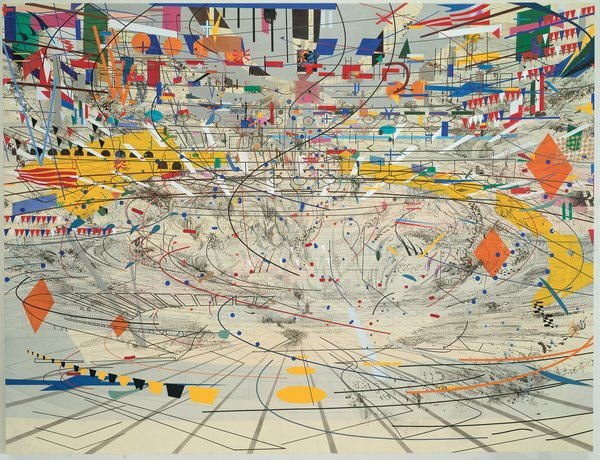
CRVI001959Julie Mehretu - Stadia II
2004
2004

CRVI000877Maurice Denis - La Fontaine
Esquisse préparatoire du décor Terre Latine · peinture à l’essence sur papier calque collé sur toile · 1906–1908
Esquisse préparatoire du décor Terre Latine · peinture à l’essence sur papier calque collé sur toile · 1906–1908

CRVI001175Thelonious Monk - Thelonious Alone In San Francisco
Designed by Harris Lewine, Ken Braren, Paul Bacon, photograph by William Claxton · Riverside Records RLP 1158 · 1959
Designed by Harris Lewine, Ken Braren, Paul Bacon, photograph by William Claxton · Riverside Records RLP 1158 · 1959
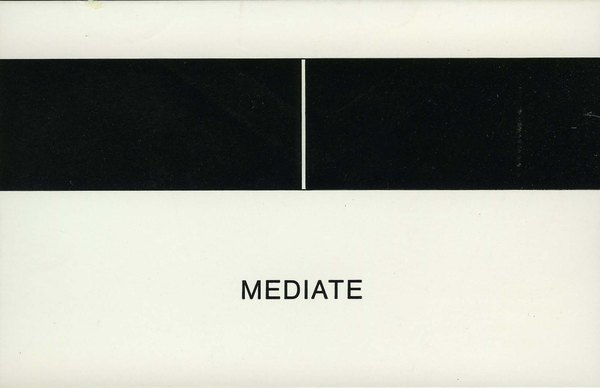
CRVI001902Douglas Huebler - Mediate
1978
1978

CRVI001149Jimmy Smith - A New Sound... A New Star... Jimmy Smith At The Organ Volume 1
Designed by Reid Miles, photograph by Francis Wolff · Blue Note BLP 1512 · 1956
Designed by Reid Miles, photograph by Francis Wolff · Blue Note BLP 1512 · 1956

CRVI000184Designer unknown - Швейныя машины Компаніи Зингеръ — Singer Company Sewing Machines
Russian Singer emblem · advertising poster
Russian Singer emblem · advertising poster

CRVI001377Thelonious Monk Trio - Thelonious Monk Trio
Designer unrecorded · Esquire 75 · 1956
Designer unrecorded · Esquire 75 · 1956

CRVI001775Jirō Yoshihara - Circle

CRVI000576Alvin Lustig - Illuminations
Arthur Rimbaud · New Directions, New Classics NC14 · 1945
Arthur Rimbaud · New Directions, New Classics NC14 · 1945

CRVI000575Alvin Lustig - Selected Poems
Ezra Pound · New Directions, New Classics NC22 · 1949
Ezra Pound · New Directions, New Classics NC22 · 1949

CRVI000840Ottagono - Ottagono 70
settembre 1983 · anno 18 · 1983
settembre 1983 · anno 18 · 1983

CRVI000446Unknown - The New Men
Cover for C. P. Snow · Penguin
Cover for C. P. Snow · Penguin

CRVI001195Mati Klarwein - Bitches Brew
Painting · the whole gatefold work · 1969
Painting · the whole gatefold work · 1969

CRVI001806James Rosenquist - Source for President Elect
1961
1961
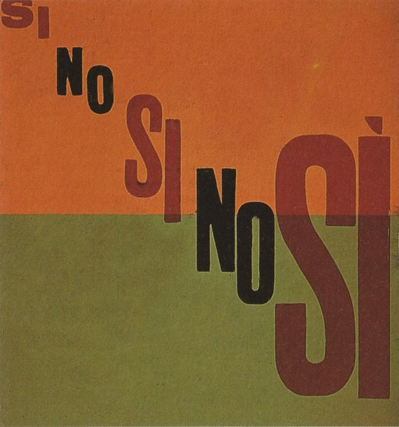
CRVI001694Filippo Tommaso Marinetti - Parole in libertà
1932
1932

CRVI000096Stock, Hausen & Walkman - Organ Transplants Vol. 1
Designer unknown · Hot Air · 1996
Designer unknown · Hot Air · 1996

CRVI000775Brownjohn, Chermayeff & Geismar - That New York
About U.S. — Experimental Typography by American Designers · The Composing Room · 1960
About U.S. — Experimental Typography by American Designers · The Composing Room · 1960
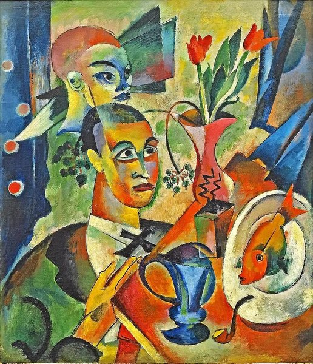
CRVI001715Heinrich Campendonk - Stillleben mit zwei Köpfen
1914
1914
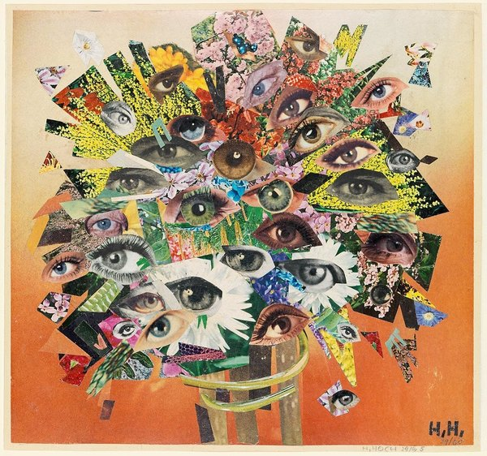
CRVI001483Hannah Höch - Collage of eyes in a vase

CRVI000594Unknown - Money Advisor: How to Borrow Money… Cleverly
New York, January 24, 1972 · 1972
New York, January 24, 1972 · 1972

CRVI000736Robert Beatty - Untitled
Album cover · artist and title unrecorded · Trendland plate 05
Album cover · artist and title unrecorded · Trendland plate 05

CRVI000861Julian Stanczak - Yellow Filtration
Screenprint · 66 × 66 cm · 1981
Screenprint · 66 × 66 cm · 1981
CRVI001549Joan Miró - The Vegetable Garden with Donkey
1918
1918

CRVI000716Thee Oh Sees - Joe Westerland
Designed by Robert Beatty · 2025
Designed by Robert Beatty · 2025
CRVI002053John Currin - The Nursery
1994
1994

CRVI001598Théo van Rysselberghe - Poster for the Lembrée Gallery
Poster · 1897
Poster · 1897

CRVI001233Mati Klarwein - Annunciation
Painting · plate V02-Annunciation4 on the artist's own site
Painting · plate V02-Annunciation4 on the artist's own site

CRVI000863Julian Stanczak - Sharing in Orange
Acrylic on canvas · 107.3 × 107.3 cm · 1970
Acrylic on canvas · 107.3 × 107.3 cm · 1970

CRVI000385Herman Chin Loy - Aquarius Recording Co
Designer unknown · Ltd. · 1975
Designer unknown · Ltd. · 1975

CRVI000150Art Blakey's Jazz Messengers - Art Blakey's Jazz Messengers
Designed by Marvin Israel · Atlantic 1278 · 1957
Designed by Marvin Israel · Atlantic 1278 · 1957
CRVI001735Unidentified - Rayonist composition
CRVI001831Richard Anuszkiewicz - Grand Treasure
1968
1968
CRVI001946Unidentified - Golden spiral painting
CRVI001750Unidentified - Interior of the Kandinsky/Klee Master House, Dessau
CRVI001633Erich Heckel - Reclining Woman
1909
1909
CRVI001555Remedios Varo - Still Life Reviving (Naturaleza muerta resucitando)
1963
1963

CRVI000152Cressida - Asylum
Designed by Keef · Vertigo 6360 025 · 1971
Designed by Keef · Vertigo 6360 025 · 1971
CRVI001627Georges Braque - Fruit Dish
1908
1908
CRVI001536David Alfaro Siqueiros - Self-Portrait (El Coronelazo)
1945
1945
CRVI001770Alfredo Ramos Martínez - Woman with flowers
CRVI002134Carolee Schneemann - Untitled

CRVI000603Unknown - Your Telephone Survival Guide
New York, April 23, 1984 · 1984
New York, April 23, 1984 · 1984
CRVI001584George Ault - Mantel Composition
1929
1929

CRVI001264Paul Chambers Quartet - Bass On Top
Designed by Harold Feinstein, photograph by Francis Wolff · Blue Note 1569 · 1957
Designed by Harold Feinstein, photograph by Francis Wolff · Blue Note 1569 · 1957

CRVI001232Mati Klarwein - Crucifixion
Painting · plate V12-Crucifixion on the artist's own site
Painting · plate V12-Crucifixion on the artist's own site
CRVI001791Morris Louis - Untitled

CRVI000727Raglani - Husk
Front cover · designed by Robert Beatty
Front cover · designed by Robert Beatty
CRVI002089Andreas Gursky - Times Square, New York
1997
1997
CRVI002102Piero Manzoni - Merda d'artista (Artist's Shit)
1961
1961
CRVI001414Giorgio de Chirico - Gentiluomo in villeggiatura
Giorgio de Chirico · date unrecorded
Giorgio de Chirico · date unrecorded

CRVI000037Orb - Orbus Terrarum
Artwork by MadArk · Island Records · 1995
Artwork by MadArk · Island Records · 1995
CRVI001722František Kupka - Self-Portrait
1907
1907
CRVI001707August Macke - Tree in the Cornfield
1907
1907
CRVI001661Jean Metzinger - Femme assise au bouquet de feuillage
1905
1905
CRVI001733Natalia Goncharova - Cats (Rayist Perception in Rose, Black and Yellow)
1913
1913

CRVI001104Utagawa Yoshifusa - Two Samurai, from Twenty-four Famous Generals of Kai
Woodblock print (nishiki-e) · Kai Nijuyon-sho no Uchi · 1843–1845
Woodblock print (nishiki-e) · Kai Nijuyon-sho no Uchi · 1843–1845

CRVI001191Mati Klarwein - Blessing
Painting · plate V15-Blessing(HIGH_RES) on the artist's own site
Painting · plate V15-Blessing(HIGH_RES) on the artist's own site

CRVI001028Adrian Ghenie - Untitled painting
Oil on canvas · Sold Sotheby's London
Oil on canvas · Sold Sotheby's London
CRVI001667Robert Delaunay - Window
1912
1912

CRVI001339unattributed - Dune — a palace
Maker unidentified
Maker unidentified
CRVI001631Ernst Ludwig Kirchner - Coffee Drinking Women
1907
1907

CRVI000017David Chesworth - 50 Synthesizer Greats
Designed by Geronimo Creative Services · 1979
Designed by Geronimo Creative Services · 1979

CRVI000834Seymour Chwast - The Left-Handed Designer
Jacket panel · Harry N. Abrams · 1985
Jacket panel · Harry N. Abrams · 1985

CRVI001307Lee Morgan - Charisma
Designed by Ann Meisel, photograph by Francis Wolff · Blue Note 4312 · 1969
Designed by Ann Meisel, photograph by Francis Wolff · Blue Note 4312 · 1969
CRVI001410Peter Max - The Color Spectrum of America — Many Faiths
Peter Max · 1976 · billboard for the GSA Art-in-Architecture Program · 1976
Peter Max · 1976 · billboard for the GSA Art-in-Architecture Program · 1976

CRVI000609Unknown - First, We Kill All the Computers
New York, July 24, 1995 · 1995
New York, July 24, 1995 · 1995

CRVI000814Seymour Chwast - June 12 March
Mixed media · 46 × 61 cm · 1982
Mixed media · 46 × 61 cm · 1982

CRVI000582Alvin Lustig - World Inventors Exposition
1947
1947

CRVI000145Gentle Giant - Octopus
Designed by Roger Dean · 1972
Designed by Roger Dean · 1972

CRVI001099Kim Laughton - Untitled
CRVI002093Lucian Freud - Naked Girl Asleep II
1968
1968
CRVI002049John Currin - Bea Arthur Naked
CRVI002086Andreas Gursky - Shanghai
2000
2000
CRVI001983Amy Sherald - Woman in a teal dress
CRVI001676Carlo Carrà - Swimmers
1912
1912

CRVI001237Mati Klarwein - St John
Painting · plate V05-St-John-3 on the artist's own site
Painting · plate V05-St-John-3 on the artist's own site
CRVI002165Roberto Matta - Atlas de médication

CRVI000765Paula Scher - The Diva is Dismissed
Serigraph · 116.8 × 76.5 cm · 1994
Serigraph · 116.8 × 76.5 cm · 1994

CRVI001055Takenobu Igarashi - Alphabet
Published by the Takenobu Igarashi Archive
Published by the Takenobu Igarashi Archive

CRVI000338Eddie Floyd - Knock On Wood
Designer unknown · Stex · 1967
Designer unknown · Stex · 1967
CRVI001698Filippo Tommaso Marinetti - Futurismo
Poster · 1932
Poster · 1932

CRVI001415Paul Bacon, Ken Braren and Harris Lewine - Everybody Digs Bill Evans
Album cover · Riverside RLP 1129 · 1959
Album cover · Riverside RLP 1129 · 1959

CRVI001288Tadd Dameron with John Coltrane - Mating Call
Designed by Esmond Edwards, Tom Hannan · Prestige 7070 · 1957
Designed by Esmond Edwards, Tom Hannan · Prestige 7070 · 1957
CRVI001497El Lissitzky - New Man
1923
1923

CRVI000433Neutral Milk Hotel - In The Aeroplane Over The Sea
Designer unknown · MGM Records · 1998
Designer unknown · MGM Records · 1998

CRVI001478Vincent van Gogh - Madame Roulin and Her Baby
1888
1888

CRVI001477Vincent van Gogh - L'Arlésienne: Madame Joseph-Michel Ginoux (Marie Julien, 1848–1911)
1888–89
1888–89
CRVI001663Jean Metzinger - Bacchante
1906
1906
CRVI001522Barnett Newman - Yellow Painting
1949
1949
CRVI001766Oskar Schlemmer - Costume from the Triadic Ballet

CRVI000244Matthias Vogt Trio - Changing Colours
Designer unknown · INFRACom! · 2006
Designer unknown · INFRACom! · 2006

CRVI001162Kenny Dorham - Una Mas
Designed by Reid Miles, photograph by Francis Wolff · Blue Note BLP 4127 · 1963
Designed by Reid Miles, photograph by Francis Wolff · Blue Note BLP 4127 · 1963

CRVI000821Seymour Chwast - Nicholas Nickleby
Mobil Showcase Network · 76 × 118 cm · 1983
Mobil Showcase Network · 76 × 118 cm · 1983

CRVI001399Giorgio de Chirico - The Two Masks
Giorgio de Chirico · 1926 · 1926
Giorgio de Chirico · 1926 · 1926

CRVI001235Mati Klarwein - Conceptual Tree
Painting · plate V19-Conceptual-Tree on the artist's own site
Painting · plate V19-Conceptual-Tree on the artist's own site

CRVI000097Tonto - It's About Time
Designer unknown · Polydor · 1974
Designer unknown · Polydor · 1974
CRVI001636Emil Nolde - Dance Around the Golden Calf
1910
1910
CRVI001562Giorgio de Chirico - The Gentle Afternoon
1916
1916
CRVI001783Shōzō Shimamoto - Untitled
CRVI001642Max Pechstein - The Masked Woman
1910
1910
CRVI002101Lucio Fontana - Concetto Spaziale, Attese
CRVI001765Anni Albers - Design for Wall Hanging
1925
1925
CRVI002094Lucian Freud - Portrait of Christian Bérard
1948
1948
CRVI001672Giacomo Balla - Girl Running on a Balcony
1912
1912
CRVI001731Arthur Dove - Sun
1943
1943

CRVI001044Kiyoshi Awazu - mano-dharma concert — Takehisa Kosugi
Poster
Poster

CRVI001251Howard Wales & Jerry Garcia - Hooteroll?
Painting by Mati Klarwein · Douglas KZ 30859 · 1971
Painting by Mati Klarwein · Douglas KZ 30859 · 1971

CRVI000827Seymour Chwast - A Tribute to Arthur Freed
Gallery of Modern Art, New York · 1967
Gallery of Modern Art, New York · 1967
CRVI001671Giacomo Balla - Iridescent Interpenetration No. 4, Study of Light
1912
1912

CRVI000426ザ・タイガース - 世界はボクらを待っている
Designer unknown · ポリドール · 1968
Designer unknown · ポリドール · 1968
CRVI001495El Lissitzky - Flying to Earth from a Distance
1920
1920

CRVI000110Kiyoshi Awazu - The 6th Contemporary Japanese Sculpture Exhibition
第6回現代日本彫刻展 · Ube City Open-Air Sculpture Museum, Tokiwa Park, Ube, Yamaguchi · 1975
第6回現代日本彫刻展 · Ube City Open-Air Sculpture Museum, Tokiwa Park, Ube, Yamaguchi · 1975
CRVI001706Franz Marc - Sheaf of Grain
1907
1907
CRVI001795Alma Thomas - The Eclipse
CRVI001408Peter Max - Different Drummer
Peter Max · 1960s · poster
Peter Max · 1960s · poster

CRVI000585Unknown - The Future of the Democratic Party
New York, November 4, 1968 · 1968
New York, November 4, 1968 · 1968

CRVI000649Unknown - Speaking Emoji
New York, November 17-23, 2014 · 2014
New York, November 17-23, 2014 · 2014

CRVI000772Erving Goffman - Interaction Ritual
Doubleday Anchor Original A596 · cover signed “Giusti” · 1967
Doubleday Anchor Original A596 · cover signed “Giusti” · 1967

CRVI000768Paula Scher - Blade to the Heat
The Public Theater · 74 × 112 cm · 1994
The Public Theater · 74 × 112 cm · 1994

CRVI000117Tadanori Yokoo - Are You Ready for Foods?
Advertisement for a Chinese restaurant · 1989
Advertisement for a Chinese restaurant · 1989
CRVI001938Unidentified - Woman with pink flowers

CRVI001807James Rosenquist - White Bread
1964
1964

CRVI000299The Residents - The Commercial Album
Designer unknown · Ralph · 1980
Designer unknown · Ralph · 1980
CRVI002183Etel Adnan - Untitled

CRVI001332Barney Bubbles - Vinyl
Designed by Barney Bubbles
Designed by Barney Bubbles

CRVI000220James Brown & The Famous Flames - Think!
Designer unknown · King · 1960
Designer unknown · King · 1960

CRVI000473Unknown - Pikettymania
Bloomberg Businessweek, June 2 – June 8, 2014 · 2014
Bloomberg Businessweek, June 2 – June 8, 2014 · 2014

CRVI000296Miles Davis - On The Corner
Designer unknown · Columbia · 1972
Designer unknown · Columbia · 1972
CRVI001492Alexander Rodchenko - White Circle
1918
1918

CRVI000553Graeme James - The Horror Ahead
The Economist, March 5-11, 2022 · 2022
The Economist, March 5-11, 2022 · 2022

CRVI000764Paula Scher - The Public Theater, 95–96 Season
Lithograph · 152.4 × 114.3 cm · 1995
Lithograph · 152.4 × 114.3 cm · 1995

CRVI000718Oneohtrix Point Never - Magic Oneohtrix Point Never
Insert panel A · designed by Robert Beatty · Warp Records · 2020
Insert panel A · designed by Robert Beatty · Warp Records · 2020

CRVI000012Foodman - Ez Minzoku
Artwork by Ellen Thomas, Keith Rankin · 2017
Artwork by Ellen Thomas, Keith Rankin · 2017

CRVI000537Gail Bichler - How America Spends
The New York Times Magazine, May 23, 2021 · 2021
The New York Times Magazine, May 23, 2021 · 2021

CRVI001379Sonny Rollins - The Standards Set by Sonny Rollins and Thelonious Monk
Designer unrecorded · Esquire 148 · 1957
Designer unrecorded · Esquire 148 · 1957

CRVI000578Alvin Lustig - The Great Gatsby
F. Scott Fitzgerald · New Directions, New Classics NC9 · 1945
F. Scott Fitzgerald · New Directions, New Classics NC9 · 1945

CRVI001139The Horace Silver Quintet - Horace-Scope
Artwork by Paula Donohue, photograph by Francis Wolff · Blue Note BLP 4042 · 1960
Artwork by Paula Donohue, photograph by Francis Wolff · Blue Note BLP 4042 · 1960

CRVI000637Unknown - Yahoo's $8 Billion Black Hole
Bloomberg Businessweek, May 2-8 2016 · 2016
Bloomberg Businessweek, May 2-8 2016 · 2016

CRVI000621Maurizio Di Iorio - The Mutant Future of Food
WIRED, August 2018 · 2018
WIRED, August 2018 · 2018

CRVI000513Oliver Munday - The Choice Is Between Freedom and Fear
The Atlantic, June 2023 · 2023
The Atlantic, June 2023 · 2023

CRVI000264Enchantment of story-telling – Roman Cieślewicz - Affabulazione
Theatre Poster · 1984 · 1984
Theatre Poster · 1984 · 1984

CRVI000058Flying Lotus - Pattern +Grid World
Designed by Theo Ellsworth · Warp Records · 2010
Designed by Theo Ellsworth · Warp Records · 2010

CRVI000844domus - domus 690
gennaio 1988 · 1988
gennaio 1988 · 1988

CRVI000179Genesis - Nursery Cryme
Designed by Paul Whitehead · Charisma CAS1052 · 1971
Designed by Paul Whitehead · Charisma CAS1052 · 1971

CRVI001331Barney Bubbles - Don't Join!
Designed by Barney Bubbles
Designed by Barney Bubbles

CRVI000418De La Soul - 3 Feet High And Rising
Designer unknown · Tommy Boy · 1989
Designer unknown · Tommy Boy · 1989

CRVI000852Richard Turley - No Chill
MTV
MTV

CRVI000069Cluster - Cluster Il
Designer unknown · Brain · 1972
Designer unknown · Brain · 1972
CRVI002153Keith Haring - Untitled (Dance)
1987
1987

CRVI001165Lee Morgan - The Sidewinder
Designed by Reid Miles, photograph by Francis Wolff · Blue Note BLP 4157 · 1964
Designed by Reid Miles, photograph by Francis Wolff · Blue Note BLP 4157 · 1964

CRVI000335Sam & Dave - Hold On, I'm Comin'
Designer unknown · Stax · 1966
Designer unknown · Stax · 1966
CRVI001867Dan Flavin - Untitled

CRVI002152Keith Haring - Untitled
1982
1982
CRVI001576Charles Sheeler - The Artist Looks at Nature
1943
1943

CRVI001317Miles Davis and Milt Jackson - Quintet/Sextet
Designed by Tom Hannan, Bob Weinstock · Prestige 7034 · 1957
Designed by Tom Hannan, Bob Weinstock · Prestige 7034 · 1957

CRVI000648Billy Sorrentino - Sex in the Digital Age
WIRED, March 2015 · 2015
WIRED, March 2015 · 2015
CRVI001786Tsuruko Yamazaki - Untitled

CRVI000147The Grassella Oliphant Quartette - The Grass Roots
Designed by Loring Eutemey · 1965
Designed by Loring Eutemey · 1965

CRVI000869John Provencher - The Yellow Wallpaper
A24 Zine, issue 33 · guest-edited by Kane Parsons · 2026
A24 Zine, issue 33 · guest-edited by Kane Parsons · 2026

CRVI001371Steve Lacy - Reflections: Steve Lacy Plays Thelonious Monk
Designer unrecorded · New Jazz 8206 · 1959
Designer unrecorded · New Jazz 8206 · 1959
CRVI002167Roberto Matta - Untitled

CRVI000870John Provencher - The Yellow Wallpaper
A24 Zine, issue 33 · inside spread · 2026
A24 Zine, issue 33 · inside spread · 2026

CRVI000679Jackie Nickerson - For the Love of Lupita Nyong'o
Vanity Fair, October 2019 · 2019
Vanity Fair, October 2019 · 2019

CRVI000574Alvin Lustig - A Room with a View
E M Forster · New Directions, New Classics NC5 · 1943
E M Forster · New Directions, New Classics NC5 · 1943

CRVI000555Gail Bichler - Great Performers: Featuring Michelle Yeoh
The New York Times Magazine, December 11, 2022 · 2022
The New York Times Magazine, December 11, 2022 · 2022

CRVI000717Oneohtrix Point Never - Magic Oneohtrix Point Never
Back cover · designed by Robert Beatty · Warp Records · 2020
Back cover · designed by Robert Beatty · Warp Records · 2020

CRVI001321Sérgio Mendes - The Swinger From Rio
Designed by Loring Eutemey, photograph by Hideoki · Atlantic 1434 · 1965
Designed by Loring Eutemey, photograph by Hideoki · Atlantic 1434 · 1965

CRVI000261Wiktor Gorka - The Great Escape
Film Poster Designed By Wiktor Gorka · 2018 · 2018
Film Poster Designed By Wiktor Gorka · 2018 · 2018

CRVI000597Unknown - Why Everybody's Talking About Gossip
New York, May 3, 1976 · 1976
New York, May 3, 1976 · 1976

CRVI001277George Wallington And His Band - George Wallington Showcase
Designed by John Hermansader, photograph by Francis Wolff · Blue Note 5045 · 1954
Designed by John Hermansader, photograph by Francis Wolff · Blue Note 5045 · 1954

CRVI002030Dana Schutz - Sneeze
2001
2001

CRVI000779Folio - Folio 5: CIBA-U.S.A.
Sanders Printing Corporation, New York · c. 1960–65
Sanders Printing Corporation, New York · c. 1960–65

CRVI001304Horace Parlan - Headin' South
Photograph by Ronnie Brathwaite · Blue Note 4062 · 1960
Photograph by Ronnie Brathwaite · Blue Note 4062 · 1960
CRVI001849Unidentified - Concentric circle composition

CRVI000845domus - domus 1111
April 2026 · 2026
April 2026 · 2026
CRVI001699Benedetta Cappa - Motorboat
1923
1923

CRVI000286Herbert Bayer - Bauhaus Exhibition Poster - 50 Years of Bauhaus
Poster
Poster
CRVI001637Emil Nolde - Self-Portrait
1912
1912

CRVI000788Paul Rand - Skull and Olive Branch
Vietnam anti-war poster · 1969
Vietnam anti-war poster · 1969

CRVI001353Elvis Costello & The Attractions - High Fidelity
Designed by Barney Bubbles · F-Beat · 1980
Designed by Barney Bubbles · F-Beat · 1980

CRVI000297King Tubby - The Roots Of Dub
Designer unknown · Total Sounds / Clock Tower Records Inc. · 1976
Designer unknown · Total Sounds / Clock Tower Records Inc. · 1976

CRVI000579Alvin Lustig - A Streetcar Named Desire
Tennessee Williams · New Directions · 1947
Tennessee Williams · New Directions · 1947

CRVI000430Teenage Fanclub - Bandwagonesque
Designer unknown · Creation · 1991
Designer unknown · Creation · 1991

CRVI001815Eduardo Paolozzi - Sack-o-Sauce
1948
1948

CRVI002036Unidentified - Gestural painting in pink and blue

CRVI000374TLC - Ooooooohhh... On The TLC Tip
Designer unknown · Laface · 1992
Designer unknown · Laface · 1992

CRVI001982Amy Sherald - Woman in a strawberry-print dress

CRVI000552Thomas Alberty - This Magazine Can Help You Get an Abortion
New York, May 23-June 5, 2022 · 2022
New York, May 23-June 5, 2022 · 2022

CRVI001494Alexander Rodchenko - Battleship Potemkin
Film poster · 1925
Film poster · 1925

CRVI000697C.A. Wisely - Suspiria
Hand-painted Ghanaian film poster
Hand-painted Ghanaian film poster
CRVI001565Otto Dix - Self-Portrait as Mars

CRVI000587Unknown - Mastering the Expense Account Diet
New York, September 1, 1969 · 1969
New York, September 1, 1969 · 1969

CRVI000488Stella Ragas - The Takeover
New York, May 6-19, 2024 · 2024
New York, May 6-19, 2024 · 2024
CRVI001527Raphael Soyer - Portrait of a pregnant woman

CRVI001046 - Poster for the 9th Contemporary Japanese Sculpture Exhibition
Poster
Poster

CRVI000120Tadanori Yokoo - Tadanori Yokoo — Stedelijk Museum Amsterdam
Exhibition poster, 22.2 t/m 14.4 1974 · 1974
Exhibition poster, 22.2 t/m 14.4 1974 · 1974

CRVI000348Eddie Hazel - Game, Dames And Guitar Thangs
Designer unknown · Warner · 1977
Designer unknown · Warner · 1977

CRVI000213Unknown - Stare
Reaction GIF · Walton Goggins as Rick Hatchett, The White Lotus · 72 frames, 3.6s loop · 2025
Reaction GIF · Walton Goggins as Rick Hatchett, The White Lotus · 72 frames, 3.6s loop · 2025

CRVI001062Lezley Saar - Thérèse Raquin
From the series Madwoman in the Attic · 2011
From the series Madwoman in the Attic · 2011

CRVI001265Donald Byrd - Off To The Races
Designed by Reid Miles, photograph by Francis Wolff · Blue Note 4007 · 1959
Designed by Reid Miles, photograph by Francis Wolff · Blue Note 4007 · 1959

CRVI001629Othon Friesz - Rocky Coast
1896
1896

CRVI001472Gustave Courbet - Jo, La Belle Irlandaise
1866
1866

CRVI000312The Human League - Reproduction
Designer unknown · Virgin · 1979
Designer unknown · Virgin · 1979

CRVI001250Mati Klarwein - Landscape Described
Painting · plate landscape-described-1963 on the artist's own site · 1963
Painting · plate landscape-described-1963 on the artist's own site · 1963

CRVI000638Tomer Hanuka - Take the L Train
The New Yorker, April 11 2016 · 2016
The New Yorker, April 11 2016 · 2016

CRVI000643Chin Wang, Javier Jaen - The Genius of Bill Belichick
ESPN The Magazine, October 17 2016 · 2016
ESPN The Magazine, October 17 2016 · 2016
CRVI001608Jan Toorop - Novemberzon
1888
1888
CRVI001585Preston Dickinson - Still Life
c. 1924
c. 1924

CRVI000331Shorty Long - Here Comes The Judge
Designer unknown · Soul · 1968
Designer unknown · Soul · 1968
CRVI001607Unidentified - Woman on marble steps at the water's edge
CRVI001616Charles Rennie Mackintosh - Décor de la salle à manger, House for an Art Lover, Glasgow
1901
1901

CRVI000618Leo Jung, Trent Davis Bailey - A Kingdom From Dust
The California Sunday Magazine, February 4 2018 · 2018
The California Sunday Magazine, February 4 2018 · 2018

CRVI000112Kiyoshi Awazu - Kiyoshi Awazu Exhibition & Workshop
The 43rd International Design Conference in Aspen · 1993
The 43rd International Design Conference in Aspen · 1993

CRVI001190Mati Klarwein - Camouflage
Painting · 1985–1987
Painting · 1985–1987
CRVI001456Dante Gabriel Rossetti - Ecce Ancilla Domini! (The Annunciation)
1849–50
1849–50

CRVI000378Thai Elephant Orchestra /Dave Soldier / Richard Lair - Elephonic Rhapsodies
Designer unknown · Mulatta · 2005
Designer unknown · Mulatta · 2005
CRVI001924Ana Mendieta - Imagen de Yagul
Silueta series · 1973
Silueta series · 1973

CRVI001476Vincent van Gogh - The Large Plane Trees (Road Menders at Saint-Rémy)
1889
1889
CRVI001696Natalia Goncharova - Cyclist
1913
1913
CRVI001524Joan Mitchell - Untitled
1956
1956
CRVI002061Salman Toor - The Punishment

CRVI000858Julian Stanczak - Unbounded
1991 · 1991
1991 · 1991
CRVI001840Carlos Cruz-Diez - Miércoles, from Serie Semana

CRVI001397Giorgio de Chirico - The Enigma of a Day
Giorgio de Chirico · 1914 · 1914
Giorgio de Chirico · 1914 · 1914

CRVI000593Unknown - Some Thoughtful Parents Care Enough About Their Kids' Education to Send Them to Public Schools
New York, November 8, 1971 · 1971
New York, November 8, 1971 · 1971
CRVI002027Neo Rauch - Vater
2007
2007

CRVI000235Coldcut - Philosophy
Designer unknown · Ninja Tune · 1993
Designer unknown · Ninja Tune · 1993

CRVI001017Henri Fantin-Latour - Édouard Manet
Oil on canvas · Art Institute of Chicago · 1867
Oil on canvas · Art Institute of Chicago · 1867

CRVI000210Unknown - Confused
Reaction GIF · Jennifer Saunders as Edina Monsoon · 20 frames, 1.3s loop
Reaction GIF · Jennifer Saunders as Edina Monsoon · 20 frames, 1.3s loop

CRVI001095Kim Laughton - Untitled
CRVI001774Unidentified - Figure with rope coils and hose
CRVI001788Unidentified - Sprayed composition

CRVI000822Seymour Chwast - Color
Noblet Sérigraphie · 56 × 89 cm
Noblet Sérigraphie · 56 × 89 cm

CRVI000059Various - The Philosophy of Sound and Machine
Designed by Third Earth · Applied Rhythmic Technology · 1992
Designed by Third Earth · Applied Rhythmic Technology · 1992
CRVI002162Mira Schendel - Untitled

CRVI000749Jim Cherry - Mondo Face
Airbrush illustration
Airbrush illustration
CRVI001673Giacomo Balla - Street Light
1909
1909
CRVI001474Dwight William Tryon - After Sunset, Looking East
CRVI001990Lynette Yiadom-Boakye - Figure at a window with a dog
CRVI001984Njideka Akunyili Crosby - Witch Doctor Revisited
2011
2011

CRVI000819Seymour Chwast - Push Pin Butcher
Mixed media · 46 × 74 cm · 1981
Mixed media · 46 × 74 cm · 1981

CRVI000854Richard Turley - [MTV ident — waterfall face]
MTV ident · animated
MTV ident · animated
CRVI002076Christian Schad - Operation
1929
1929
CRVI002098Leon Kossoff - Swimming pool

CRVI000205Unknown - Time
Reaction GIF · Matthew McConaughey as Rust Cohle · 31 frames, 3.1s loop
Reaction GIF · Matthew McConaughey as Rust Cohle · 31 frames, 3.1s loop

CRVI000747Unknown - Clarity
Designed by Sam Wenc
Designed by Sam Wenc
CRVI002063El Greco - The Adoration of the Shepherds
CRVI001534Diego Rivera - Portrait of Ramón Gómez de la Serna
1915
1915

CRVI001660Albert Gleizes - Bermuda
1917
1917
CRVI002029Rudolf Stingel - Untitled
2023
2023

CRVI000746Emahoy Tsege Mariam Gebru - Emahoy Tsege Mariam Gebru
Album cover · designed by Sam Wenc
Album cover · designed by Sam Wenc

CRVI000383Brainticket - Celestial Ocean
Designer unknown · RCA Victor · 1972
Designer unknown · RCA Victor · 1972

CRVI000763Tadeusz Gronowski - Polski Plakat Filmowy
Filmowa Agencja Wydawnicza, Warsaw · jacket design · 1957
Filmowa Agencja Wydawnicza, Warsaw · jacket design · 1957
CRVI002040Tauba Auerbach - Extended Object
2018
2018
CRVI001435Unidentified - Interior with patterned walls and chequered door
CRVI002073Christian Schad - Portrait of Dr. Haustein
CRVI001624André Derain - Still Life on the Table
1904
1904

CRVI000850New West - A Star Is Born
New West Magazine
New West Magazine
CRVI001664Jean Metzinger - Petit port, pêcheurs et bateaux au quai
1906
1906
CRVI002150Louise Lawler - Pollyanna (adjusted to fit)
2007/2008/2012
2007/2008/2012

CRVI000128Koichi Sato - The 6th Iwaki Prefecture Art Festival
1982
1982

CRVI001181Wes Montgomery - So Much Guitar!
Designed by Ken Deardoff, photograph by Donald Silverstein · Riverside Records RLP 382 · 1961
Designed by Ken Deardoff, photograph by Donald Silverstein · Riverside Records RLP 382 · 1961

CRVI001172Sonny Clark - Cool Struttin'
Designed by Reid Miles, photograph by Francis Wolff · Blue Note BLP 1588 · 1958
Designed by Reid Miles, photograph by Francis Wolff · Blue Note BLP 1588 · 1958

CRVI001244Mati Klarwein - Grandfather
Painting · plate V27-Grandfather on the artist's own site
Painting · plate V27-Grandfather on the artist's own site

CRVI000195Unknown - Desk Flip
Reaction GIF · Panda in an office · 43 frames, 5.2s loop
Reaction GIF · Panda in an office · 43 frames, 5.2s loop
CRVI002175Yasumasa Morimura - Self-portrait as a bride
CRVI001923Ana Mendieta - Untitled (feather work)

CRVI000078Jega - Spectrum
Designer unknown · 1998
Designer unknown · 1998
CRVI001558Remedios Varo - Simpatía (La rabia del gato)
1955
1955

CRVI000322Skream - Skream!
Designer unknown · Tempa · 2006
Designer unknown · Tempa · 2006
CRVI002025Neo Rauch - Mars
2002
2002
CRVI001412Giorgio de Chirico - The Uncertainty of the Poet
Giorgio de Chirico · 1913 · oil on canvas · Tate · 1913
Giorgio de Chirico · 1913 · oil on canvas · Tate · 1913

CRVI001434Gustav Klimt - I. Kunstausstellung der Vereinigung Bildender Künstler Österreichs Secession
Poster · 1898
Poster · 1898

CRVI001380Terry Pollard - Terry Pollard
Designed by Burt Goldblatt · Bethlehem 1015 · 1955
Designed by Burt Goldblatt · Bethlehem 1015 · 1955

CRVI001286Elmo Hope Sextet - Informal Jazz
Designed by Tom Hannan, photograph by Bob Weinstock · Prestige 7043 · 1956
Designed by Tom Hannan, photograph by Bob Weinstock · Prestige 7043 · 1956
CRVI002055Jonas Wood - Plants in an interior

CRVI000523Unknown - It's Good to Be Bad Bunny
Vanity Fair
Vanity Fair

CRVI001154John Coltrane - Coltrane
Designed by Esmond Edwards · Prestige PRLP 7105 · 1957
Designed by Esmond Edwards · Prestige PRLP 7105 · 1957

CRVI001313Martin Denny - Exotica Volume II
Photograph by Garrett-Howard · Liberty LST 7006 · 1958
Photograph by Garrett-Howard · Liberty LST 7006 · 1958

CRVI000174The Modern Jazz Quartet - The Sheriff
Designer unknown · Atlantic 1414 · 1964
Designer unknown · Atlantic 1414 · 1964

CRVI001119Art Blakey And The Jazz Messengers - Moanin'
Photograph by Buck Hoeffler · Blue Note BLP 4003 · 1959
Photograph by Buck Hoeffler · Blue Note BLP 4003 · 1959

CRVI001137Herbie Hancock - Maiden Voyage
Designed by Reid Miles · Blue Note BLP 4195 · 1965
Designed by Reid Miles · Blue Note BLP 4195 · 1965

CRVI000310Doris Norton - Artificial Intelligence
Designer unknown · Globo · 1985
Designer unknown · Globo · 1985

CRVI001130Freddie Hubbard - Hub-Tones
Designed by Reid Miles, photograph by Francis Wolff · Blue Note BLP 4115 · 1962
Designed by Reid Miles, photograph by Francis Wolff · Blue Note BLP 4115 · 1962

CRVI001127Donald Byrd - A New Perspective
Designed by Reid Miles · Blue Note BLP 4124 · 1964
Designed by Reid Miles · Blue Note BLP 4124 · 1964

CRVI001550Yves Tanguy - Through Birds, Through Fire, but Not Through Glass
1943
1943

CRVI000642Luke Hayman, Shigeto Akiyama, Annabel Mehran - Yentl 4Eva
Tablet Magazine, Fall 2016 · 2016
Tablet Magazine, Fall 2016 · 2016

CRVI001136Grant Green - Visions
Designed by Beverly Parker, photograph by Norman Seeff · Blue Note BST-84373 · 1971
Designed by Beverly Parker, photograph by Norman Seeff · Blue Note BST-84373 · 1971

CRVI000608Unknown - Is Your Cat Contemplating Suicide?
New York, April 24, 1995 · 1995
New York, April 24, 1995 · 1995
CRVI001708August Macke - Anglers on the Rhine
1907
1907

CRVI001481Henri Rousseau - Fight Between a Tiger and a Buffalo
1908
1908

CRVI000510Albert Ayler - The Last Album
Designed by Woody Woodward Grafix · Impulse! · 1971
Designed by Woody Woodward Grafix · Impulse! · 1971

CRVI000019Two Lone Swordsmen - Stay Down
Designed by Haywire, James Woodbourne · Warp Records · 1998
Designed by Haywire, James Woodbourne · Warp Records · 1998

CRVI000745Mississippi Records - Chess Of The Wind
Screening and soundtrack poster · designed by Sam Wenc
Screening and soundtrack poster · designed by Sam Wenc

CRVI001287Hank Mobley - Mobley's Message
Designer unrecorded · Prestige 7061 · 1957
Designer unrecorded · Prestige 7061 · 1957

CRVI001311Les Baxter - Sensational!
Designer unrecorded · Capitol T 1388 · 1960
Designer unrecorded · Capitol T 1388 · 1960
CRVI001703Mario Sironi - The Lamp
1919
1919
CRVI001499Gustav Klutsis - Postcard Commemorating the Russian All-Union Spartakiada
1928
1928

CRVI000572Alvin Lustig - Monday Night
Kay Boyle · New Directions, New Classics NC20 · 1947
Kay Boyle · New Directions, New Classics NC20 · 1947

CRVI001129Eric Dolphy - Out To Lunch!
Designed by Reid Miles · Blue Note BLP 4163 · 1964
Designed by Reid Miles · Blue Note BLP 4163 · 1964

CRVI000166Soft Machine - Seven
Designed by Roslav Szaybo · CBS 65799 · 1973
Designed by Roslav Szaybo · CBS 65799 · 1973

CRVI000344James Brown & The Famous Flames - Cold Sweat
Designer unknown · King · 1967
Designer unknown · King · 1967

CRVI001393Giorgio de Chirico - The Song of Love
Giorgio de Chirico · 1914 · 1914
Giorgio de Chirico · 1914 · 1914

CRVI001805Roy Lichtenstein - Brushstroke
1965
1965

CRVI000529Robert Vargas - André 3000 Is Back!
GQ, November 2023 · 2023
GQ, November 2023 · 2023

CRVI001121Lee Konitz, Brad Mehldau, Charlie Haden - Alone Together
Designed by Patrick Roques, painting by Kenneth Noland · Blue Note 7243 8 57150 2 0 · 1997
Designed by Patrick Roques, painting by Kenneth Noland · Blue Note 7243 8 57150 2 0 · 1997

CRVI000161Kazumasa Nagai - Peace
Designed by Kazumasa Nagai · 1989
Designed by Kazumasa Nagai · 1989

CRVI001052Takenobu Igarashi - Untitled poster
Poster · The Museum of Modern Art, New York
Poster · The Museum of Modern Art, New York

CRVI001653Juan Gris - Bottles and Knife
1912
1912
CRVI001893Unidentified - Neon composition after Mondrian with text panels
CRVI001964Rashid Johnson - Untitled

CRVI000157Kazumasa Nagai - Exhibition of Graphic Art
Designed by Kazumasa Nagai · 1978
Designed by Kazumasa Nagai · 1978

CRVI001078Kim Laughton - Untitled
CRVI001470Aubrey Beardsley - How La Beale Isoud Wrote to Sir Tristram

CRVI001471Aubrey Beardsley - The Climax
1893
1893
CRVI001632Ernst Ludwig Kirchner - Wehrlin, Facing Front
1924
1924

CRVI000324DJ Diamond - Flight Muzik
Designer unknown · Planet Mu · 2011
Designer unknown · Planet Mu · 2011

CRVI000759Tetsuya Ishida - Rooftop Refugee
Acrylic on board · 145.8 × 103.3 cm · 1996
Acrylic on board · 145.8 × 103.3 cm · 1996

CRVI000064Mouse On Mars - Dimensional People
Designer unknown · Thrill Jockey · 2018
Designer unknown · Thrill Jockey · 2018
CRVI001969Lorna Simpson - Head on Ice #2
2016
2016
CRVI001446Unidentified - Secession 1897–1905
Poster
Poster
CRVI002042Christopher Wool - Felix
CRVI001822Bridget Riley - The Responsive Eye
1965
1965
CRVI001439Unidentified - Wall-covering design

CRVI001803Roy Lichtenstein - Okay Hot-Shot, Okay!
1963
1963

CRVI000600Unknown - When Was the Last Time You Called Your Mother?
New York, May 7, 1979 · 1979
New York, May 7, 1979 · 1979
CRVI001723František Kupka - Self-Portrait with Wife
1908
1908
CRVI002095Frank Auerbach - Head of Paula Eyles

CRVI001024Gustave Courbet - Les Demoiselles des bords de la Seine (été)
Oil on canvas, 174 × 206 cm · Petit Palais, Paris · 1856–1857
Oil on canvas, 174 × 206 cm · Petit Palais, Paris · 1856–1857
CRVI002078Christian Schad - Figure in a paper hat
CRVI001518Franz Kline - Chief
1950
1950

CRVI000707C.A. Wisely - La Haine
Hand-painted Ghanaian film poster
Hand-painted Ghanaian film poster

CRVI001148Jimmy Smith - A New Sound... A New Star... Jimmy Smith At The Organ Volume 2
Designed by Reid Miles, photograph by Francis Wolff · Blue Note BLP 1514 · 1956
Designed by Reid Miles, photograph by Francis Wolff · Blue Note BLP 1514 · 1956

CRVI000767Paula Scher - Simpatico
The Public Theater · 1994
The Public Theater · 1994

CRVI001156Kenny Burrell & John Coltrane - Kenny Burrell & John Coltrane
Designed by Don Schlitten, artwork by Stylianos Gianakos · New Jazz NJLP 8276 · 1963
Designed by Don Schlitten, artwork by Stylianos Gianakos · New Jazz NJLP 8276 · 1963

CRVI001391Emmett McBain - The Playboy Jazz All-Stars
Designed by Emmett McBain · Playboy Records · 1957 · 1957
Designed by Emmett McBain · Playboy Records · 1957 · 1957

CRVI001305Horace Parlan - Us Three
Designed by Reid Miles, photograph by Francis Wolff · Blue Note 4037 · 1960
Designed by Reid Miles, photograph by Francis Wolff · Blue Note 4037 · 1960

CRVI001376Max Roach - Deeds, Not Words
Designed by Paul Bacon, photograph by Lawrence N. Shustak · Riverside 12-280 · 1958
Designed by Paul Bacon, photograph by Lawrence N. Shustak · Riverside 12-280 · 1958

CRVI001298Lee Morgan - Here's Lee Morgan
Photograph by Chuck Stewart · Vee-Jay LP 3007 · 1960
Photograph by Chuck Stewart · Vee-Jay LP 3007 · 1960

CRVI000317Farben - Textstar
Designer unknown · Klang Elektronik · 2002
Designer unknown · Klang Elektronik · 2002
CRVI001929Anselm Kiefer - Interior
1981
1981

CRVI001402Ken Deardoff - Takin' Care Of Business
Designed by Ken Deardoff · Charlie Rouse Quintet · Jazzland · 1960 · 1960
Designed by Ken Deardoff · Charlie Rouse Quintet · Jazzland · 1960 · 1960
CRVI001913James Turrell - Pullen (White)
1967
1967

CRVI001016Édouard Manet - The Melon
Oil on canvas, 32.6 × 44.1 cm · National Gallery of Victoria, Melbourne · c. 1880
Oil on canvas, 32.6 × 44.1 cm · National Gallery of Victoria, Melbourne · c. 1880

CRVI001118Andrew Hill - Smoke Stack
Designed by Reid Miles · Blue Note BLP 4160 · 1966
Designed by Reid Miles · Blue Note BLP 4160 · 1966

CRVI000092Juan Blanco - Musica Electroacustica
Designer unknown · Areito
Designer unknown · Areito

CRVI001374Max Brüel Quartet - Cool Bruel
Designer unrecorded · EmArcy 36062 · 1956
Designer unrecorded · EmArcy 36062 · 1956

CRVI000664Unknown - The New Yorker, April 9, 2007
The New Yorker, April 9, 2007 · 2007
The New Yorker, April 9, 2007 · 2007

CRVI001169Oscar Peterson, Milt Jackson, Ray Brown, Louis Hayes - Reunion Blues
Designed by Wolfgang Baumann · MPS Records · 1971
Designed by Wolfgang Baumann · MPS Records · 1971

CRVI001213Mati Klarwein - Real Estate
Painting · plate real estate on the artist's own site
Painting · plate real estate on the artist's own site

CRVI001319Steve Reich - Drumming · Music For Mallet Instruments, Voices And Organ · Six Pianos
Photograph by Marcel Fugère · Deutsche Grammophon 2740 106 · 1974
Photograph by Marcel Fugère · Deutsche Grammophon 2740 106 · 1974

CRVI000100Sid Bass - From Another World
Designer unknown · Vik · 1956
Designer unknown · Vik · 1956

CRVI000240Sunship - Sunship
Designer unknown · Filter · 1997
Designer unknown · Filter · 1997

CRVI000728Raglani - Husk
Back cover · designed by Robert Beatty
Back cover · designed by Robert Beatty

CRVI000830Seymour Chwast - Liberty
Artis 89 · offset · 60 × 84 cm
Artis 89 · offset · 60 × 84 cm

CRVI001263Curtis Fuller - The Opener
Photograph by Francis Wolff · Blue Note 1567 · 1957
Photograph by Francis Wolff · Blue Note 1567 · 1957

CRVI001082Kim Laughton - Untitled

CRVI000350The Brides of Funkenstein - Funk Or Walk
Designer unknown · Warner · 1978
Designer unknown · Warner · 1978